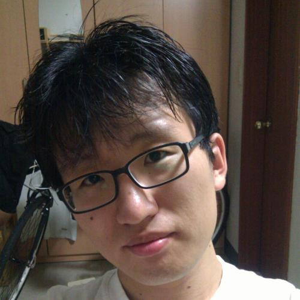
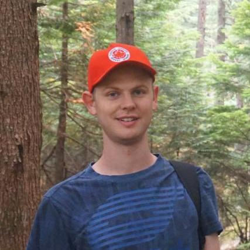
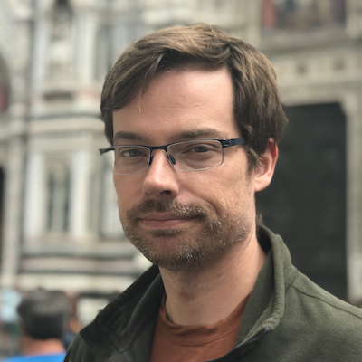

W-NUT 2026
Invited Talks

09:30 – 10:30 Room G15-16
When Noise Is the Point: What Humanistic Tasks Reveal About Our Data Pipelines
Maria Antoniak · University of Colorado Boulder
14:00 – 15:00 Room G15-16
Language Identification in the (Pretraining) Data Processing Pipeline – State of the Art and Open Problems
Hinrich Schütze · University of Munich

16:00 – 17:00 Room G15-16
Enhancing Multilingual LLMs with Code-Switching
Haneul Yoo · New York University
When Noise Is the Point: What Humanistic Tasks Reveal About Our Data Pipelines
Maria Antoniak · University of Colorado Boulder
Chair: Alan Ramponi
Keynote 1 · Q&A
Questions & discussion
When Noise Is the Point: What Humanistic Tasks Reveal About Our Data Pipelines
Maria Antoniak · University of Colorado Boulder
Chair: Alan Ramponi
Enhancing Multilingual LLMs with Code-Switching
Haneul Yoo · New York University
Chair: Weerayut Buaphet
Keynote 3 · Q&A
Questions & discussion
Enhancing Multilingual LLMs with Code-Switching
Haneul Yoo · New York University
Chair: Weerayut Buaphet
Thank you
Organizers




Contact
jy.bak@skku.edu
JinYeong Bak